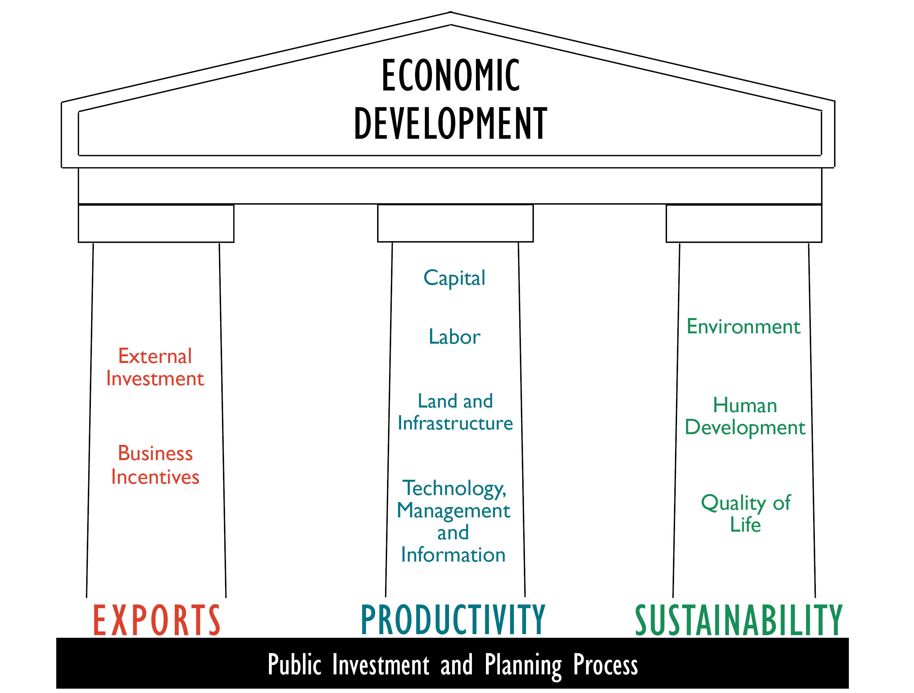

Click here to view the most recent Warner team publications on this topic.
General Economic Development Strategies
The base of all economic development is investment. When private investment fails to meet a community's particular needs, public investment or public/private partnerships may be necessary. Current realities and future challenges of economic development give rise to three foundational principles on which economic development investments should be based: exports, productivity and sustainability. Exports have motivated much of economic development activity in the past, but the shift from a manufacturing service based economy and increasing global competition has emphasized the importance of productivity. A growing awareness of the need for human development and the scarcity of natural resources also highlights the need for a sustainable approach.
Exports, productivity, and sustainability are the three principles of economic development - the pillars that form the core support of the economic development edifice. With too much or too little investment in any one of the three, the structure becomes unstable.

Demchak, Victoria. 2013. "Art, Wine, and Local Investment in the Finger Lakes: Designing a Collaborative Stakeholder Tourism in Tompkins County." Submitted to the 2013 APA Economic Development Division Travel Scholarship.
As a revenue source, tourism can be particularly fickle for a city and its hospitality industry, which is subject to a national market of substitutes and changing tastes. Tompkins County, in upstate New York, has established a well-supported taxation mechanism that serves as a consistent funding source for amenities that benefit both local residents and tourists visiting the area. Tompkins County's strategy leans on a single, common tool for local taxation: the room tax (also known as the hotel or occupancy tax). The clear goals of its bed tax and the innovative use of its revenues set Tompkins County apart from other municipalities.
Business Incentive Use
Some local governments entice business investment in their communities by offering businesses various types of incentives. After a dropping for a decade, business incentive use increased dramatically with the recession. Recent research by Warner et al. found that use of business incentives rose substantially during the Great Recession of the last decade.
Warner, M. and Lingwen Zheng. 2013. Business Incentive Adoption in the Recession. Economic Development Quarterly, forthcoming.
Business incentive use dramatically rose among US municipalities after the Great Recession. This paper seeks to explain that rise using national surveys of local government economic development practice for 2004 and 2009. We differentiate business incentive use by three types (tax abatements, labor support and planning) and by new and experienced users. We find that higher business incentive use is a response to lower property tax and higher unemployment. We also find higher business incentive use is associated with greater attention to accountability – even among the new business incentive users. Governments that rely more heavily on tax incentives to firms face more competition and lower tax revenue than governments which use more incentives focused on labor and planning. We also find broadening attention to accountability measures and a widening of community development investment to arenas that target improved quality of life.

Zheng, Lingwen and Mildred Warner. 2010. Business Incentive Use Among U.S. Local Governments: A Story of Accountability and Policy Learning. Economic Development Quarterly 24(4):325-326.
Use of business incentives is one of the most common local economic development strategies. The authors analyze national surveys of 700 to 1,000 local governments from 1994, 1999, and 2004 to track use of business incentives over time. They find a shift from primary reliance on business incentives to use of a broader set of strategies that includes business retention and small business support. The authors also find evidence of policy learning with increased attention to accountability among governments that use business incentives. The 2004 model results also suggest that governments that rely most heavily on incentives may face more intergovernmental competition, stagnating or declining economies, and lower tax bases. For such governments, business incentives may contribute to a cycle of destructive competition.
Economic Development in Recessionary Times
"Economic Development Strategies for Recessionary Times: Survey Results from 2009," Warner, Mildred and Lingwen Zheng: 2011. ICMA Municipal Year Book 2011 (Washington, D.C.: ICMA, 2011), 33-42.
In response to the recession, local governments’ use of business incentives rose from 72% of respondents in 2004 to 95% in 2009. The majority of respondents (73%) give top priority to programs supporting quality of life (education, recreation, arts and culture), high-quality physical infrastructure (59%), and affordable housing (48%). Sixty percent of respondents reported using clawback agreements, which require firms to pay back incentives if they do not deliver the promised employment benefits.
Business Improvement Districts
While effective in promoting economic development, Business Improvement Districts (BIDs) also raise important issues about governance and control over public space. The following report profiles issues raised by both proponents and critics of BIDs and provides case studies focused on material from New York State.
Business Improvement Districts: Issues in Alternative Local Public Service Provision. 2002. Mildred Warner, James Quazi, Brooks More, Ezra Cattan, Scott Bellen, Kerim Odekon. Cornell University.